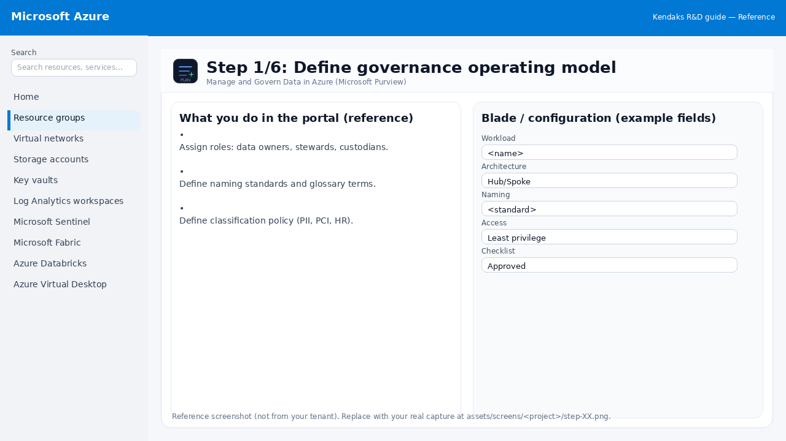
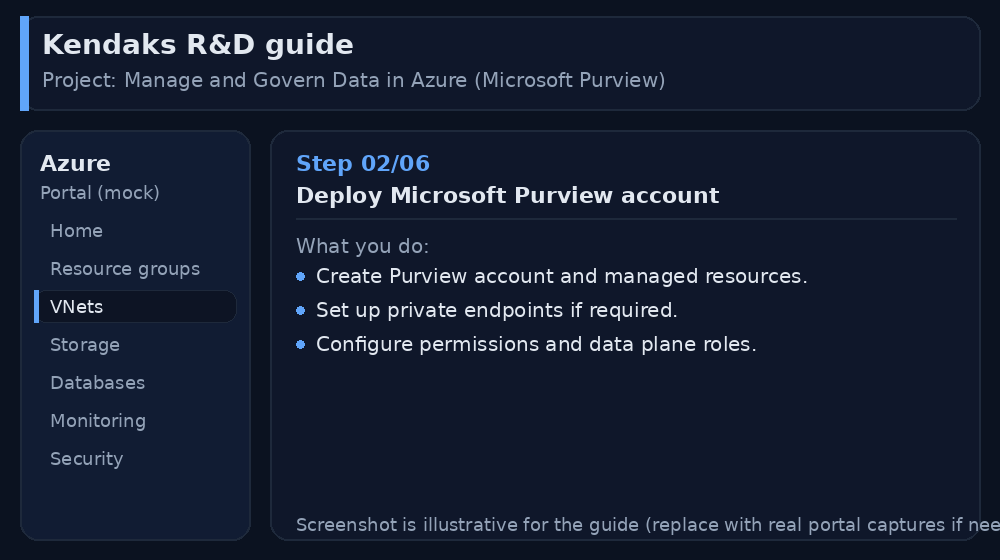
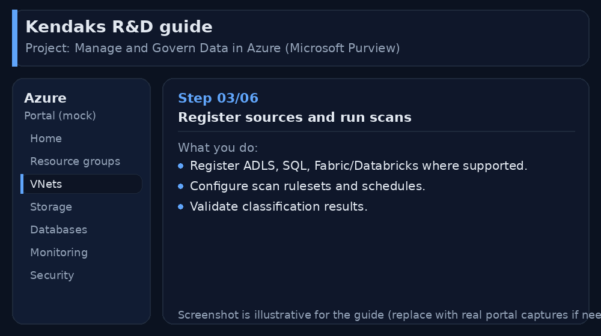
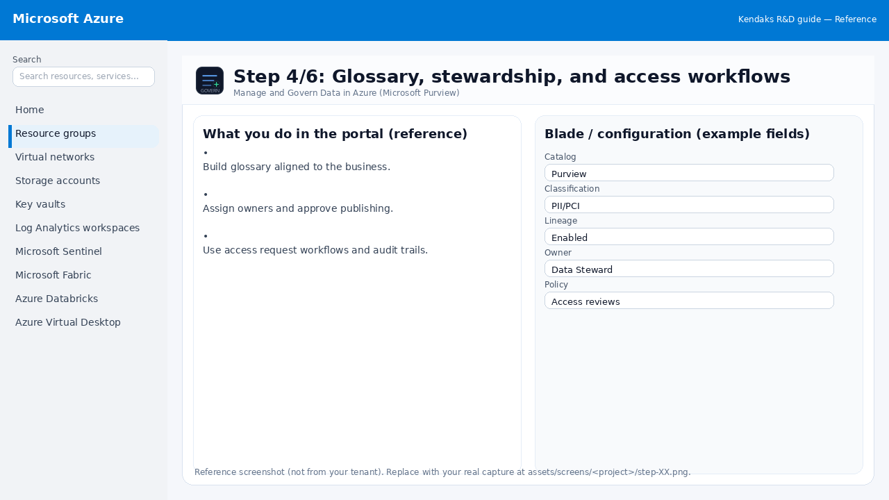
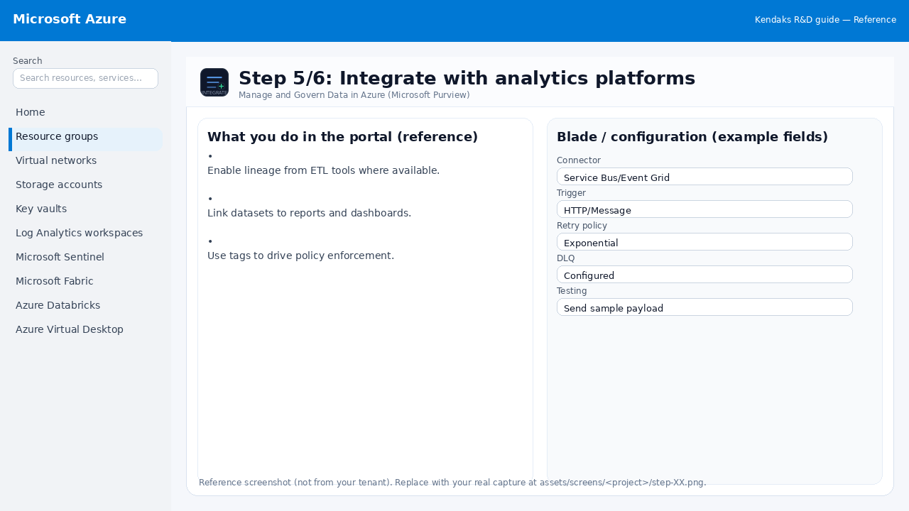
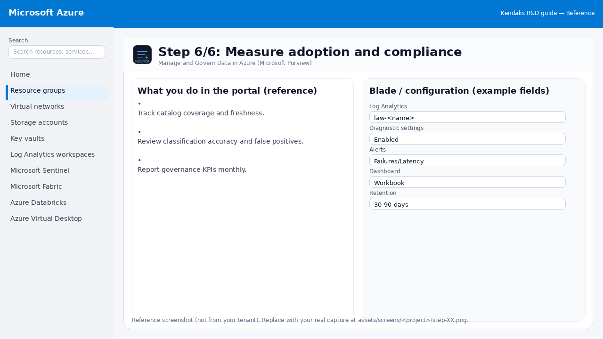

Manage and Govern Data in Azure (Microsoft Purview)
Category: Data Governance
Scenario: A company needs a searchable data catalog, lineage, and PII controls. Example: 'Kendaks Data Office' tracks datasets from ingestion to BI and enforces access rules.
Architecture diagram
High-level view of the main components and data/control flows.
Low-level architecture diagram (Visio-style)
Implementation view (networking, security, ops). Click to open full size.
Low-level architecture details
(No low-level text provided.)
Step-by-step implementation
Step 1/6
Define governance operating model

Reference portal screenshot (click to zoom). Replace with your tenant capture if needed.
Assign roles: data owners, stewards, custodians. Define naming standards and glossary terms. Define classification policy (PII, PCI, HR).
Validation checklist
Stakeholders have signed off the scope, SLAs, and data/security requirements. You have documented naming standards, environments, and ownership (RACI).
Step 2/6
Deploy Microsoft Purview account

Reference portal screenshot (click to zoom). Replace with your tenant capture if needed.
Create Purview account and managed resources. Set up private endpoints if required. Configure permissions and data plane roles.
Validation checklist
Deployment completed; smoke tests passed; rollback plan confirmed.
Step 3/6
Register sources and run scans

Reference portal screenshot (click to zoom). Replace with your tenant capture if needed.
Register ADLS, SQL, Fabric/Databricks where supported. Configure scan rulesets and schedules. Validate classification results.
Validation checklist
The storage/lakehouse/warehouse resources are created and accessible via least privilege. A sample dataset lands successfully and can be queried/read end-to-end. Retention, encryption, and backup settings match requirements.
Step 4/6
Glossary, stewardship, and access workflows

Reference portal screenshot (click to zoom). Replace with your tenant capture if needed.
Build glossary aligned to the business. Assign owners and approve publishing. Use access request workflows and audit trails.
Validation checklist
RBAC/roles are assigned to Entra groups (no direct user assignments). Policies/labels/lineage settings are enabled as required. Audit logs are enabled and flowing to the central workspace/SIEM.
Step 5/6
Integrate with analytics platforms

Reference portal screenshot (click to zoom). Replace with your tenant capture if needed.
Enable lineage from ETL tools where available. Link datasets to reports and dashboards. Use tags to drive policy enforcement.
Validation checklist
Connections/authentication succeed and test messages/records flow through. Retries/DLQ/error handling are configured and validated with a forced failure.
Step 6/6
Measure adoption and compliance

Reference portal screenshot (click to zoom). Replace with your tenant capture if needed.
Track catalog coverage and freshness. Review classification accuracy and false positives. Report governance KPIs monthly.
Validation checklist
Logs and metrics are flowing (check Log Analytics / Monitor). Alerts trigger correctly (test alert path to email/Teams/ITSM).